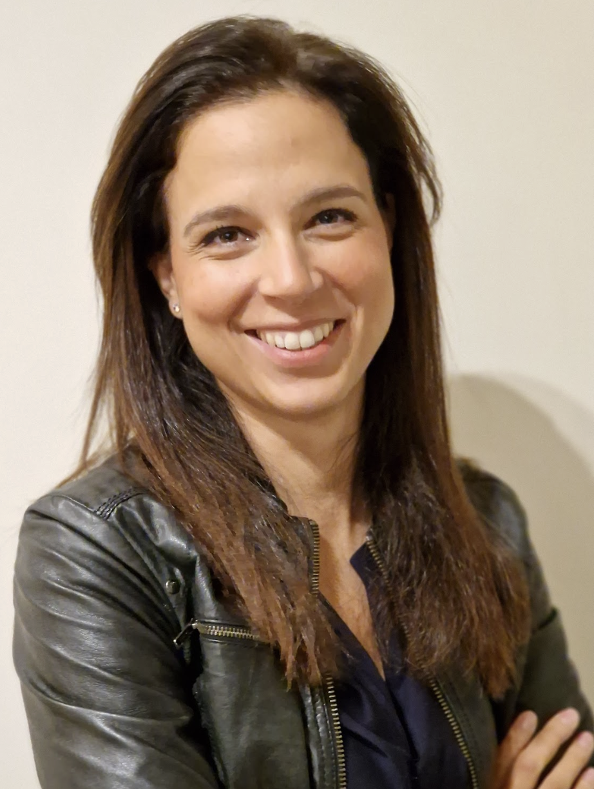

I work as a software engineer with a deep curiosity about how technology can solve real problems and create impact for organizations and people. Throughout my career, I have developed a combination of technical thinking, product sensitivity, and an increasingly business-oriented perspective.
I am particularly motivated by understanding how systems work in depth, as well as how technological decisions connect with strategy, user experience, and the value a company delivers to its customers.
Currently, I work on developing applications and systems in cloud environments, collaborating closely with product, engineering, and infrastructure teams. I especially enjoy contexts where technology is not an end in itself, but a tool to build useful, scalable, and sustainable solutions.
My career has unfolded in the field of software engineering, working in international teams and modern technological environments. Over the years, I have had the opportunity to participate in the development and maintenance of applications, understand distributed architectures, and work with cloud technologies and microservices-based systems.
On a daily basis, I collaborate in the development of digital products, participating in both backend tasks and understanding the infrastructure that supports the applications. I am particularly interested in understanding systems end-to-end: from code to deployment, observability, and scalability.
This interest in the big picture has also led me to delve into aspects of architecture, cloud platforms, and development processes, always seeking to understand not only how solutions are built but why certain technical or product decisions are made.
Beyond purely technical work, I highly value collaboration within teams. Building software is, above all, a collective effort where communication, clarity, and trust among people are as important as the quality of the code.
Over time, I have developed a growing interest in the intersection between technology, product, and business. I enjoy analyzing how companies make decisions, how digital products evolve, and how technology can become a real competitive advantage.
For this reason, in addition to technical development, I dedicate time to understanding business models, organizational dynamics, and product strategies. I am particularly interested in how companies can create useful, sustainable, and well-thought-out products where technology serves a clear vision.
This perspective allows me to connect technical work with broader organizational goals and better understand the impact technological decisions have on the final product.
I consider myself a reflective, curious, and committed lifelong learner. In technology, where everything evolves rapidly, I believe the ability to keep learning is one of the most important skills.
I am characterized by an analytical and structured way of thinking, which leads me to delve into problems, identify patterns, and devise well-founded solutions from both a technical and strategic perspective.
I work with close attention to detail, seeking to understand problems before addressing them and building solid, well-grounded solutions. I also place high value on clarity in communication, both technical and interpersonal, as I believe the best teams are those where ideas flow transparently and respectfully.
I enjoy working in collaborative environments where people share knowledge, support each other, and build solutions together.
Rigor and Responsibility: I believe in doing work well and taking responsibility for what we build. Technology has a real impact on organizations and people, which is why it deserves to be developed with care and professionalism.
Intellectual Curiosity: I always try to understand the full context of problems. This involves asking questions, researching, and maintaining an open mindset for continuous learning.
Collaboration: The best software is built in teams where trust, respect, and willingness to share knowledge exist.
Long-term Thinking: I am especially interested in building solutions that not only work today but remain useful and maintainable in the future.
Outside of work, I am married and a mother of two daughters, an experience that has deeply shaped my worldview and the way I work. Motherhood has taught me the importance of patience, organization, empathy, and the ability to prioritize what truly matters.
I greatly value learning, education, and intellectual curiosity, values I also strive to instill in my family life. I am particularly interested in fostering environments where people can grow with freedom, critical thinking, and self-confidence.
My personal and professional life share a central idea: continuous growth. Whether learning new technologies, reflecting on how organizations operate, or supporting my daughters’ development, I strive to maintain an open, thoughtful, and improvement-oriented mindset.
Outside of work, I enjoy life in all its forms. I love spending time with my daughters, playing with them, traveling, and enjoying summer and the beach. I am a big fan of German culture. I am passionate about skiing, skating, windsurfing, dancing, and staying active in the gym, as well as getting lost in series, movies, or books that inspire me. Music, museums, concerts, and photography are forms of expression that fulfill me. In fact, I have been playing guitar since I was a child and enjoy dedicating some time to it each week. I love food, especially Mexican cuisine and spicy dishes. I am a true foodie who enjoys exploring flavors. I also highly value moments shared with friends and family. I am deeply motivated to collaborate and help others, to try to leave a better world for my daughters, and to contribute purposefully wherever I can.
My long-term goal is to continue evolving at the intersection of technology, product, and business strategy. I am interested in participating in building organizations and products that have real impact, combining technical thinking with business vision.
I firmly believe in the potential of technology when it is used thoughtfully, purposefully, and with a genuine understanding of human needs.